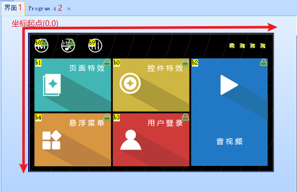
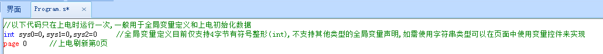

5.界面
5.1 界面窗口 界面窗口是UI编辑的主要工作区域，该区域可以被分为两部分。如上图所示，中间一个与当前闲着设备型号分辨率相同的区域为设备运行的可显示区域，超出该范围的为设备运行不可显示区域。t0.t1.k0控件只能放在可显示区域，设置非显示区域软件编译会报错。x系列x，y属性可以超出屏幕坐标范围(-6000~+6000)，但是超出屏幕将被裁减，不会显示出来。 可显示区域，以左上角作为坐标原点。分别向右（X轴）和向下（Y轴）增长，增长步进为1像素点。
5.2 program.s窗口
program.s窗口用于自定义全局变量和上电初始化数据如（bkcmd指令，bands指令）
注意
代码不要写page指令后面，page指令后面的程序是不执行的。